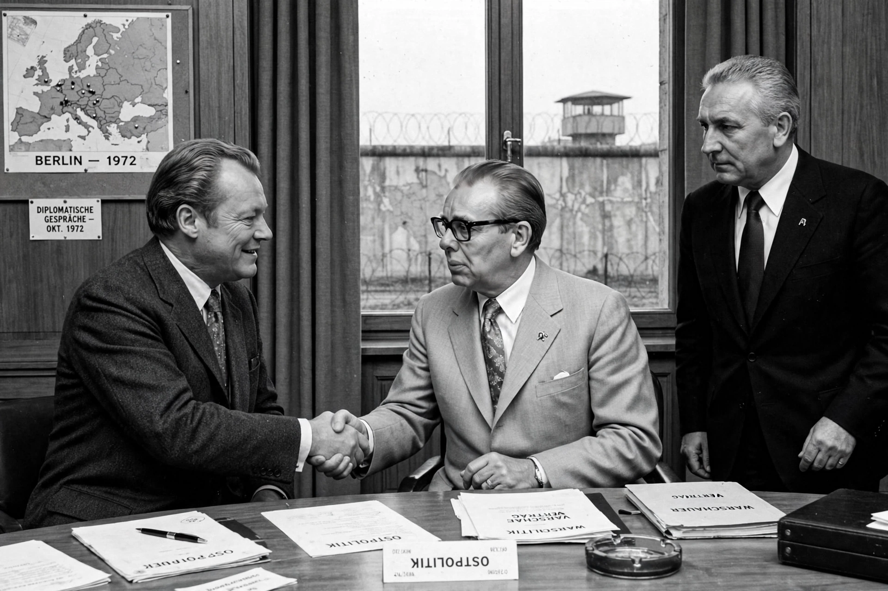

Ostpolitik (German for "eastern policy") was the normalisation of relations between West Germany (Federal Republic of Germany) and Eastern Europe, particularly the German Democratic Republic (East Germany), pursued under Chancellor Willy Brandt from 1969. It marked a break from the Hallstein Doctrine, which refused recognition of East Germany.

| Proponent | Willy Brandt, Egon Bahr |
|---|---|
| Period | 1969–1974 onward |
| Slogan | Wandel durch Annäherung — change through rapprochement |
Key agreements included the Moscow Treaty (1970) with the Soviet Union, the Warsaw Treaty (1970) recognising the Oder–Neisse line, the Four Power Agreement on Berlin (1971), and the Basic Treaty (1972) between the two German states. Brandt's kneeling at the Warsaw Ghetto memorial (Kniefall von Warschau, 7 December 1970) became an iconic gesture; he received the Nobel Peace Prize in 1971.
Critics feared it legitimised communist regimes; supporters credit it with easing tensions, enabling family contacts, and laying groundwork for German reunification in 1990. Contrast Realpolitik. See also Bismarck for earlier German eastern diplomacy.